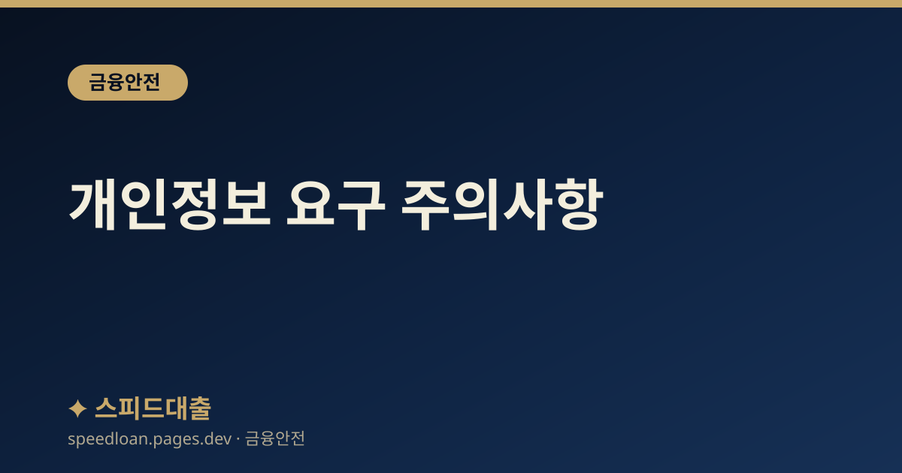

개인정보 요구 주의사항
대출 상담에서 절대 제공하면 안 되는 정보와 신분증·계좌 정보가 유출됐을 때의 대처법을 정리했습니다.

개인정보가 곧 돈이 되는 이유
대출을 빙자한 사기에서 개인정보는 그 자체로 범죄 도구가 됩니다. 신분증 사진 한 장이 비대면 계좌 개설이나 명의도용에 쓰이고, 통장과 카드가 대포통장으로 이어지기 때문입니다. 그래서 어떤 정보를 넘겨도 되는지 미리 선을 정해 두는 것이 중요합니다.
아래 내용은 일반적인 참고 정보입니다. 정보를 넘긴 뒤 후회하기보다, 요구를 받은 그 순간에 한 번 더 의심하는 습관이 가장 확실한 예방책입니다.
특히 주의할 점은, 한 번 넘어간 정보는 되돌리기 어렵다는 것입니다. 비밀번호는 바꿀 수 있어도 이미 개설된 계좌나 대출은 수습하는 데 오랜 시간과 노력이 듭니다. 그래서 개인정보는 '필요한 곳에, 필요한 방식으로만' 제공한다는 기준을 세워 두는 것이 좋습니다. 대출 상담이라는 이유만으로 민감한 정보를 통째로 넘길 필요는 없습니다.
절대 제공하면 안 되는 것
다음 정보들은 정상적인 대출 절차에서 문자나 통화로 넘길 이유가 없습니다. 요구받는다면 그 자체를 위험 신호로 보시기 바랍니다.
- 신분증 원본 사진을 문자나 메신저로 전송하는 것 — 비대면 계좌 개설과 도용에 악용됩니다.
- 계좌 비밀번호, OTP 번호, 인증서 비밀번호 — 금융회사는 어떤 경우에도 묻지 않습니다.
- 통장과 체크카드 실물 — 대포통장에 쓰이며 넘겨주는 것 자체가 범죄가 될 수 있습니다.
- 가족과 지인의 연락처 — 불법 추심에 악용됩니다.
정보별로 어떻게 악용되는가
각 정보가 넘어가면 구체적으로 어떤 피해로 이어질 수 있는지 알아 두면, 요구를 받았을 때 더 단호하게 거절할 수 있습니다.
- 신분증 사진: 내 이름으로 비대면 계좌나 대출이 개설되어 빚이나 범죄 계좌 명의자가 될 수 있습니다.
- 통장과 카드: 대포통장으로 넘어가 보이스피싱 자금 이동에 쓰이고, 명의자가 수사 대상이 될 수 있습니다.
- 인증번호와 비밀번호: 실제 내 계좌에서 돈이 빠져나가는 데 곧바로 쓰일 수 있습니다.
- 지인 연락처: 내가 연락이 안 될 때 지인에게 대신 갚으라는 추심으로 이어질 수 있습니다.
이처럼 하나의 정보가 별개의 피해로 끝나지 않고 서로 연결되는 경우가 많습니다. 신분증으로 개설한 계좌에 다시 내 통장과 카드가 더해지면 피해 규모가 커지는 식입니다. 그래서 어느 하나라도 넘어갔다고 판단되면, 관련된 다른 정보까지 함께 점검하고 차단 조치를 하는 것이 안전합니다.
정상 절차와 구별하기
정식 금융회사의 정보 수집 방식은 사기와 뚜렷하게 다릅니다. 다음 특징을 알아 두면 구별에 도움이 됩니다.
- 정식 금융회사는 공식 앱과 웹의 보안 화면에서만 정보를 입력받습니다.
- 상담원이 전화로 주민등록번호 전체나 카드번호, 비밀번호를 불러 달라고 하지 않습니다.
- 심사에 필요한 서류는 공식 앱 업로드나 마이데이터 연동으로 처리합니다.
- 정보 제공을 지나치게 서두르게 하지 않으며, 거부해도 불이익을 주겠다고 위협하지 않습니다.
평소에 지키면 좋은 습관
정보 보호는 사고가 난 뒤보다 평소의 작은 습관으로 지켜집니다. 다음과 같은 습관을 들여 두면 갑작스러운 요구에도 흔들리지 않을 수 있습니다.
- 신분증 사진을 휴대폰 사진첩이나 메신저 대화에 저장해 두지 않습니다.
- 비밀번호와 인증 정보를 메모 앱이나 문자에 적어 두지 않습니다.
- 출처가 불분명한 링크는 누르지 않고, 앱은 공식 마켓에서만 내려받습니다.
- 가족과 미리 '금융회사는 인증번호를 묻지 않는다'는 원칙을 공유해 둡니다.
정보를 지나치게 서둘러 요구받으면 일단 멈추고 시간을 두는 것이 좋습니다. 정상적인 금융 절차는 몇 분 더 확인한다고 해서 사라지지 않습니다. 반대로 사기는 상대가 생각할 틈을 주지 않으려 하므로, 재촉당하는 느낌 자체가 하나의 경고 신호가 됩니다. 판단이 서지 않을 때는 가족이나 가까운 사람에게 상황을 설명해 보는 것만으로도 냉정을 되찾는 데 도움이 됩니다.
유출이 의심될 때
정보를 넘겼거나 유출이 의심된다면 빠르게 차단 조치를 하는 것이 피해를 줄이는 길입니다. 아래 서비스들을 순서대로 활용해 보시기 바랍니다.
- 계좌정보통합관리서비스(payinfo.or.kr): 내 계좌를 한 번에 조회하고 지급정지하며, 비대면 계좌 개설을 차단합니다.
- 명의도용 방지 서비스(msafer.or.kr): 휴대폰 신규 개통을 차단합니다.
- 신용평가사 앱에서 신용정보 조회 알림을 설정해 도용 시도를 빨리 파악합니다.
- 금융감독원(1332)과 개인정보침해 신고(118)에 상황을 알리고 안내를 받습니다.
특히 내 명의로 모르는 대출이나 계좌가 생겼는지 주기적으로 확인하는 습관을 들이면, 피해를 초기에 발견해 대응 범위를 좁힐 수 있습니다. 이상한 점을 발견했을 때 곧바로 상담할 수 있도록, 관련 신고 번호를 미리 메모해 두는 것도 도움이 됩니다.
자주 묻는 질문
대출 심사에 신분증이 꼭 필요하다는데 사진을 보내도 되나요?
정식 금융회사는 문자나 메신저가 아니라 공식 앱과 웹의 보안 화면에서 신분증을 확인합니다. 개인 번호나 메신저로 원본 사진을 보내라는 요구는 도용 위험이 크므로 응하지 않는 것이 안전합니다.
상담원이 인증번호를 불러 달라고 합니다. 알려줘도 되나요?
OTP, 인증서 비밀번호, 문자 인증번호는 어떤 금융회사도 전화로 묻지 않습니다. 이를 요구한다면 사기로 보고 통화를 끊은 뒤 공식 대표번호로 다시 확인하시기 바랍니다.
실수로 정보를 넘겼습니다. 지금 무엇부터 해야 하나요?
계좌정보통합관리서비스로 비대면 계좌 개설을 차단하고, 명의도용 방지 서비스로 휴대폰 개통을 막는 조치를 먼저 검토하시기 바랍니다. 이어서 1332에 상황을 알리고 후속 안내를 받는 것이 좋습니다.
내 명의로 모르는 대출이 생겼는지 어떻게 확인하나요?
계좌정보통합관리서비스로 내 계좌를 한눈에 조회하고, 신용평가사 앱에서 조회와 개설 알림을 설정해 두면 이상 징후를 빨리 파악할 수 있습니다. 의심되는 내역이 있으면 1332에 문의하시기 바랍니다.
공식 참고 기관
본 사이트의 콘텐츠는 아래 공공·공식 기관의 공개 자료를 참고하여 작성하며, 구체적인 조건과 최신 제도는 해당 기관에서 직접 확인하시기 바랍니다.
본 사이트는 대출을 직접 제공하거나 중개하지 않으며, 금융상품 가입을 권유하지 않습니다. 모든 정보는 일반적인 참고용이며, 실제 대출 가능 여부, 한도, 금리, 조건은 금융회사 심사와 개인 신용상태에 따라 달라질 수 있습니다.